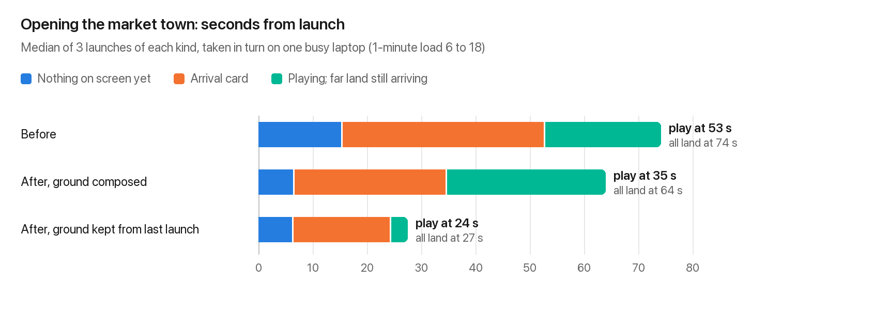

A shorter wait at the gate
Opening Oakwell took the best part of a minute, most of it spent painting ground that came out the same every time. The town now keeps what it painted, and a close look at the rest of the wait found three delays that had nothing to do with art.
Every time you start Sprawl you arrive in Oakwell behind a card that says the streets are being laid. That is not a figure of speech. The town's ground is not a picture that ships with the game. It is worked out when you arrive, from the town's plan: where the lanes run, which doors open onto them, where the old tree throws its shade, how the land climbs toward the hills. That is what lets a town be laid out by rules and not painted by hand. It is also slow.

Everything under the people and the buildings in that picture is the ground this post is about: the cobbles, the wear round the well, the shade under the tree.
How long the wait was
We timed a launch on the computer the game is built on, a 2019 laptop that was busy with other work at the time. Counting from the moment the game starts, there was nothing on screen at all for about fifteen seconds. The arrival card then stood for more than half a minute, and you could not move until about fifty-three seconds in. The fields beyond the walls went on arriving after that, and the last of the land was laid at about seventy-four seconds.

The same ground, painted again
Oakwell's ground is about half a gigabyte of picture, painted in fourteen pieces: the town itself first, then the land around it, nearest first. The work is shared between six processor threads and it still takes them about a minute. Every launch painted exactly the same ground as the launch before.
So the game now keeps it. The first time a version of the game opens a town it paints the ground as it always did, and saves each piece as it goes. Every launch after that reads the pieces back. Reading all fourteen takes under a second.
Knowing the kept ground is the right ground
A saved picture is only worth having if it is the right one. Each piece is filed under a name worked out from everything that goes into painting it: the town's plan, the shape of the land, every tree and wall, and the version of the game itself. Change any of those and the name changes with it. The old picture is simply not found, and the ground is painted afresh. Nobody has to remember to throw old pictures away, and nobody keeps a list of which details matter, because all of them go into the name.
The files are checked as they are read. One that was cut short or damaged is ignored, and that piece is painted again. There is also a test launch that paints everything anyway and compares it with what was kept, one pixel at a time. All fourteen pieces came out identical.
The kept ground takes about 117 megabytes on disk for Oakwell. The game holds the total to half a gigabyte and lets go of whatever was used longest ago.
The wait that was hiding behind it
With the ground arriving in under a second, the first test launch was only a little quicker. The ground had been the longest wait, but it had also been hiding others. So we recorded what the game was doing, moment by moment, through a whole launch. Three things stood out, and none of them was art.
- The game kept asking itself a question whose answer never changes. Whether this is the hand-built town is settled by an option given when the game starts. The code looked that option up afresh every time it wanted to know, and it wants to know for every pixel of every wall it paints. In the recording, about nine seconds went on looking it up. It is now looked up once.
- It asked the hard question first. To work out where people can walk, the game asks of every barrel and crate whether it is still in the way, since a crate can be broken open, and only then whether it is anywhere near. Nearly everything is nowhere near. Asking the easy question first gives the same answer much sooner.
- One job was left to a single core while everything else waited. Before the first picture can be shown, the game works out how the streets are shaded. That was meant to happen in the background on six cores. A newer feature, laying out practice weapons in the square, needed the answer early, so it was worked out on the spot on one core. That was another nine seconds in the recording, with nothing on screen. It now uses six.
What it adds up to
Before, the card appeared at about fifteen seconds, you could play at about fifty-three, and the land was complete at about seventy-four.
Now, the first launch of a new version still paints the ground, but the card appears at about six seconds and you can play at about thirty-five.
Every launch after that reads the ground back. The card appears at about six seconds, you can play at about twenty-four, and the whole of the land is there three seconds later.
Each of those is the middle of three launches. The old and new versions were run turn and turn about on the same computer, so that whatever else it was doing slowed both alike. On a quieter computer every number will be smaller. The gap between them is the part to trust.
What is still slow
There is still one long pause after the card appears, of fifteen seconds or more, while the town's buildings are drawn for the first time. That is now the largest part of the wait. The buildings' artwork can be kept between launches in the same way, and the work for that already exists behind a switch that is not yet on. It is next.
The town also holds a great deal of picture in memory once you have walked all the way round it, about two gigabytes. That is a separate job, and it has not been started.